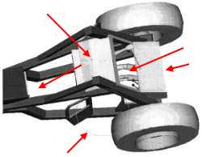
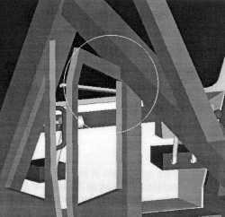
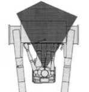
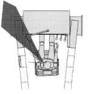
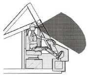
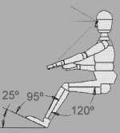
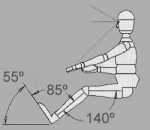

|
INFORME TÉCNICO TECFOR Nº 12 |
|
UN GRAN AVANCE : LA EVOLUCIÓN DEL TEC 2.2 AL EURO 2000
1ª Parte
El proyecto de
innovación tecnológica tuvo por objetivo el rediseño del TECFOR , principalmente en lo relacionado
con la ergonomía de su cabina , desde el punto de vista de la facilidad de acceso y operación , así
como del confort del operador en lo que se refiere a temperatura , humedad , ruido y vibraciones.
El cronograma de actividades consultó encuestas a operadores , un estudio exhaustivo de los equipos forestales
, entrevistas y asesorías de expertos en cada tema . Una vez analizadas las posibles mejoras en la ergonomía
de la cabina, estas se llevaron a planos , algunas incluso a maquetas , y luego se incorporaron en el equipo aquellas
que efectivamente arrojaron resultados positivos.
La duración del proyecto fue de 14 meses y contó con la participación de profesores de la
Facultad de Ingeniería de la Universidad Católica y expertos de la ACHS.
EL ESTUDIO
Este proyecto contempló un análisis ergonométrico del diseño del vehículo desarrollado por la empresa TECFOR.
Los elementos que se estudiaron están relacionados con los siguientes puntos :
- Espacio
de ingreso y salida del vehículo.
- Espacio de operación dentro de la cabina.
- Condiciones de confort operacional (movimiento del operador.)
- Aislación acústica.
- Aislación térmica.
- Facilidad de mantenimiento.
- Visibilidad
- Panel de instrumentos
- Pedaleras
Las modificaciones propuestas para el prototipo están enmarcadas en las restricciones que impone el diseño del vehículo para su funcionamiento. Se han conservado las dimensiones de la estructura principal y la ubicación de los componentes que permiten el correcto desempeño del vehículo como herramienta de trabajo.
DESARROLLO TÉCNICO
Se realizó
un proceso de medición dimensional a la estructura del TEC y se traspasó la información al
computador con
el objeto de generar un plano bidimensional de espacio y acceso a la cabina desde varias perspectivas.
Se realizaron reuniones y conversaciones con proveedores de los elementos internos de la cabina, relativos a climatización,
aislación acústica, amortiguación de asientos, etc
Se realizó una investigación bibliográfica buscando recopilar antecedentes relativos a restricciones
ergonómicas.
La información de mayor utilidad reunida se detalla a continuación:
1. Ullman, David G., The Mechanical Design Process, McGraw-Hill, 1977
2. Tilley, Alvin R., The Measure of Man and Woman, Henry Dreyfuss Associates, 1993
3. Apud, E., Análisis Ergonómico de Maquinarias: Criterios Prácticos para su Evaluación,
Instituto Forestal, 1992
EL RESULTADO El resultado
tiene impactos positivos en nuestro sector forestal , por cuanto la productividad de los operadores de los equipos
con esta nueva cabina se ve aumentada por su mejor ergonomía. 
Paralelamente , pero no menos importante , la accidentabilidad de los mismos ha disminuido debido a los accesos
más seguros a la cabina y la incorporación de un asiento hidráulico que disminuye los lumbagos.

.............Continúa el próximo mes
Recuerde ,TECFOR es innovación tecnológica, Compruébelo !